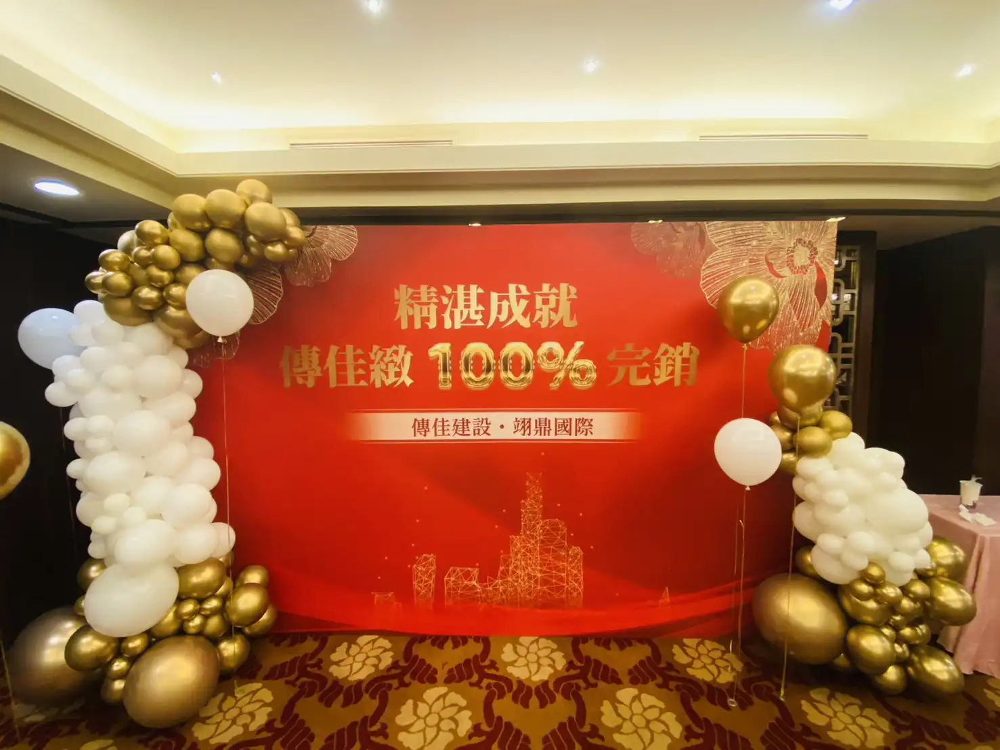
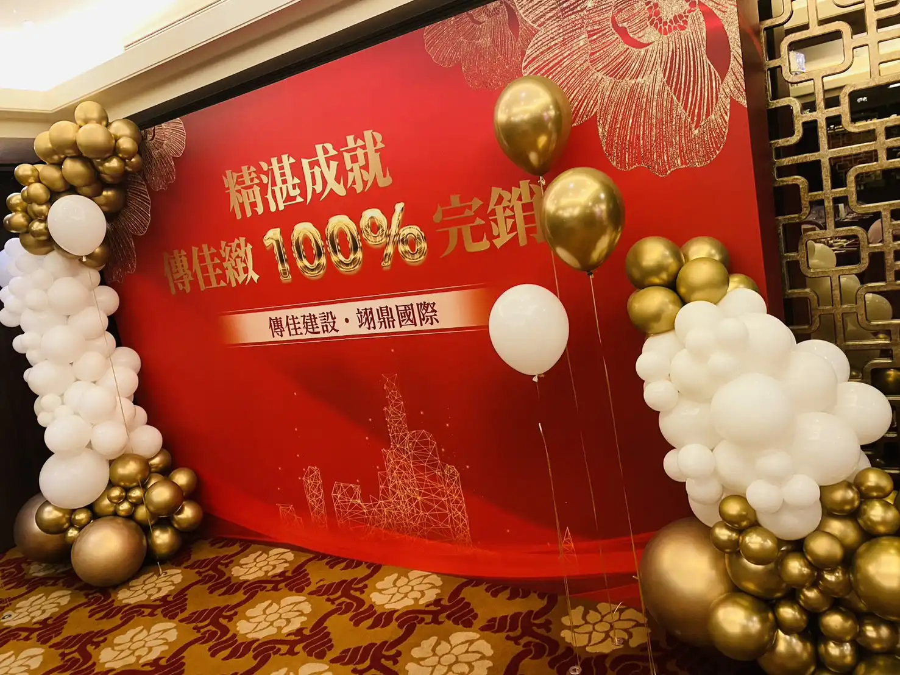
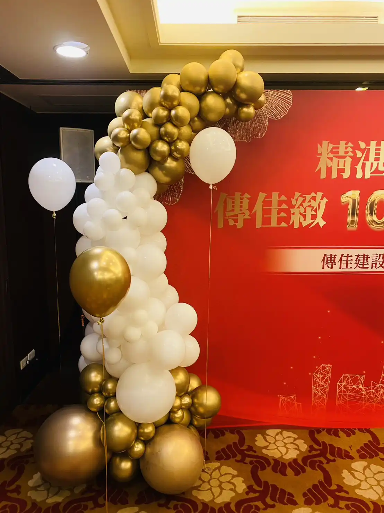

榮耀呈獻：桃園尊爵大飯店傳佳緻 100% 完銷慶功宴佈置
專業氣球藝術 × 商業慶典策劃｜氣球大叔 Sony 打造氣勢非凡的慶功盛會
📍 地點：桃園 尊爵大飯店 (The Monarch Plaza Hotel)
2025 年盛夏，氣球大叔 Sony 很榮幸受邀來到桃園指標性的 尊爵大飯店，為傳佳建設「傳佳緻」建案 100% 完銷慶功宴 打造專屬的會場佈置。慶功宴的核心在於傳遞成功與喜悅，我們憑藉豐富的企業活動執行經驗，將宴會空間轉化為金碧輝煌的慶典場域，完美烘托出傳佳建設的輝煌成就。

設計美學：金白交織的視覺饗宴
為了凸顯「100% 完銷」的榮耀，Sony 選擇了經典的 「流沙金」 與 「珍珠白」 作為主色調。主背板以喜慶紅底襯托金色「精湛成就」標語，兩側延伸出優雅的流線型氣球拱門，不僅豐富了視覺層次，更彰顯出慶典的高規格質感。


- 🏆 掌握品牌調性： 將建商的穩重形象與完銷的喜悅完美結合。
- 🎨 創意造型設計： 突破傳統氣球框架，打造具有現代感的裝置藝術。
- ⚙️ 高效專業施工： 配合飯店場地規範，確保進撤場快速且乾淨。
"現場佈置非常氣派！金白色的設計極具質感，完全符合我們完銷的喜悅和成就感，給賓客留下了深刻的第一印象。"
💡 關於桃園企業慶功佈置的常見問題
- Q: 在桃園尊爵大飯店這類高等級飯店舉辦慶功宴，氣球佈置需要注意什麼？
- A: 在高等級飯店宴會廳進行佈置，質感與專業施工是關鍵。氣球大叔 Sony 擁有豐富的飯店配合經驗，我們會嚴格遵守飯店的進撤場規範。針對傳佳建設的慶功宴，我們採用金、白、紅的高端配色，利用不規則氣球鏈與異材質結合，營造出既莊重又不失熱鬧的商業氣息，完美襯托企業的品牌形象。
- Q: 商業慶功宴或建案完銷盛典，通常建議選擇哪種風格的氣球佈置？
- A: 針對商業慶典，我強烈建議選擇「金白色系」或配合企業識別色（CI）的「質感不規則氣球設計」。這種風格能帶出商業活動的正式感，相較於傳統圓型氣球拱門更具現代藝術感。我們會結合主題背板、發光字、或是金屬拉絲材質氣球，為活動打造具備視覺張力的拍照區域，幫助品牌在社群媒體上留下最專業的紀錄。
- Q: 氣球大叔 Sony 在桃園地區可以提供飯店佈置搭配互動表演的一站式方案嗎？
- A: 當然可以！除了像本次尊爵大飯店的靜態佈置，我們也常為桃園企業提供一站式解決方案。例如：由精緻會場佈置開啟典禮高度，接著由 Sony 老師帶來高能引流的魔術秀或氣球特技表演。這種「視覺美感」與「動態互動」的結合，能確保整場商業盛事從開場到謝幕都充滿熱度與專業感，是許多建商與大廠指定的首選。
🎈 正在尋找桃園企業慶功佈置嗎？
如果您也希望為您的活動創造像現場一樣爆棚的人氣與驚喜，氣球大叔 Sony 是您的首選！我們專注於提供高品質的互動演出與情境佈置：
- 商業慶祝活動：慶功宴佈置、產品發表會視覺、企業春酒尾牙。
- 品牌行銷推廣：百貨商場造勢、門市開幕佈置、VIP 客戶派對。
- 飯店宴會裝飾：婚禮氣球佈置、高端慶生派對、飯店主題晚會。
📅 本文整理於 2025 年 07 月 29 日，完整紀錄真實活動現場氛圍。